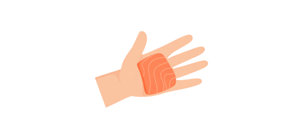

Картинка шапки · 800 x 500 px
Рыба - отличный источник омега-3, белка и микроэлементов. Но некоторые виды накапливают метилртуть - нейротоксин, опасный при регулярном употреблении. Используйте этот гайд, чтобы сделать правильный выбор.
Картинка 1 · широкая горизонтальная
Свежая рыба — богатый источник омега-3 и белка
Лучший выбор
2–3 порции в неделю
- Анчоус
- Атлантический горбыль
- Атлантическая макрель
- Чёрный сибас (морской окунь)
- Масляная рыба
- Зубатка
- Моллюски
- Треска
- Краб
- Лангуст
- Камбала
- Пикша
- Сельдь
- Лобстер (колючий и американский)
- Кефаль
- Устрицы
- Японская скумбрия
- Окунь (пресноводный и океанский)
- Щука
- Ёрш
- Минтай
- Лосось
- Сардина
- Гребешок
- Креветки
- Скат
- Корюшка
- Морской язык
- Кальмар
- Тилапия
- Форель пресноводная
- Тунец консерв. светлый (и полосатый)
- Сиг
- Хек (мерлуза)
Хороший выбор
1 порция в неделю
- Луфарь
- Буффало
- Карп
- Чилийский сибас / Патагонский клыкач
- Групер
- Палтус
- Махи-махи / Дорадо
- Морской чёрт
- Морской окунь
- Угольная рыба
- Морской карась
- Снеппер
- Испанская макрель
- Полосатый окунь (океанский)
- Тайлфиш (Атлантический океан)
- Тунец длинноперый
- Белый тунец консерв. и свежий
- Замороженный тунец желтоперый
- Горбыль
- Белый горбыль / Тихоокеанский горбыль
Избегайте или редко
Высокая концентрация ртути
- Королевская макрель
- Марлин
- Большеголов
- Акула
- Рыба-меч
- Тайлфиш (Мексиканский залив)
- Большеглазый тунец
Выбирайте морепродукты с меньшим содержанием ртути. Это особенно важно для детей младшего возраста, беременных и кормящих женщин.
Что такое порция?

Картинка ладони
Взрослая порция
Размер ладони
Одна порция рыбы для взрослого - кусок размером с вашу ладонь (без пальцев), толщиной около 2 см.

Картинка ладошки
Детская порция
Размер детской ладошки
Рыба вводится постепенно, с небольших количеств. Порция - размером с детскую ладошку. Начинать с лучшего выбора.